FIT5124 Assignment 1 - Encrypted Database Attacks & Countermeasures
Assignment Requirements
You can find it in: https://github.com/RdWeirdo981/Master-of-Cybersecurity/blob/main/2021S1%20FIT5124%20Advanced%20Security%20Topics/A1/FIT5124-S1-2021-A1.pdf
Task 1: Reading Encryption Scheme
Security Definition
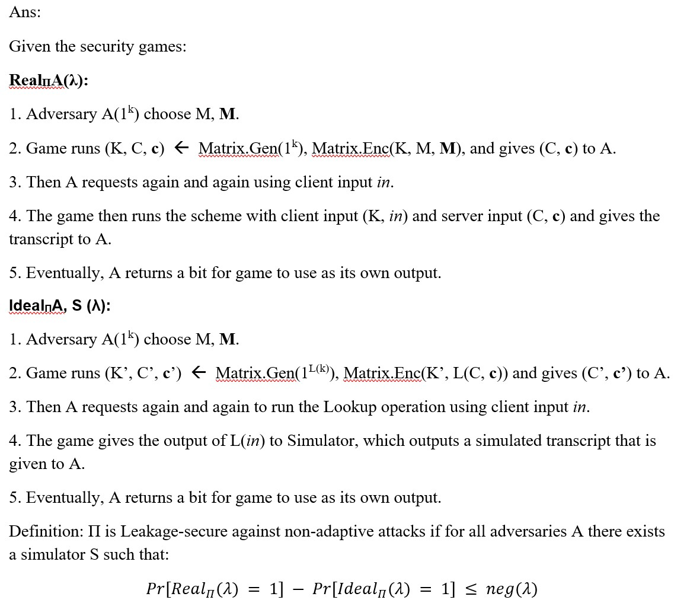
Security Analysis

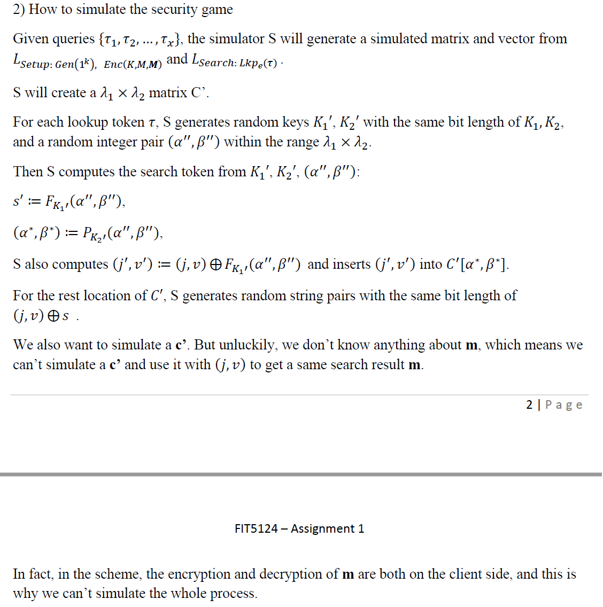
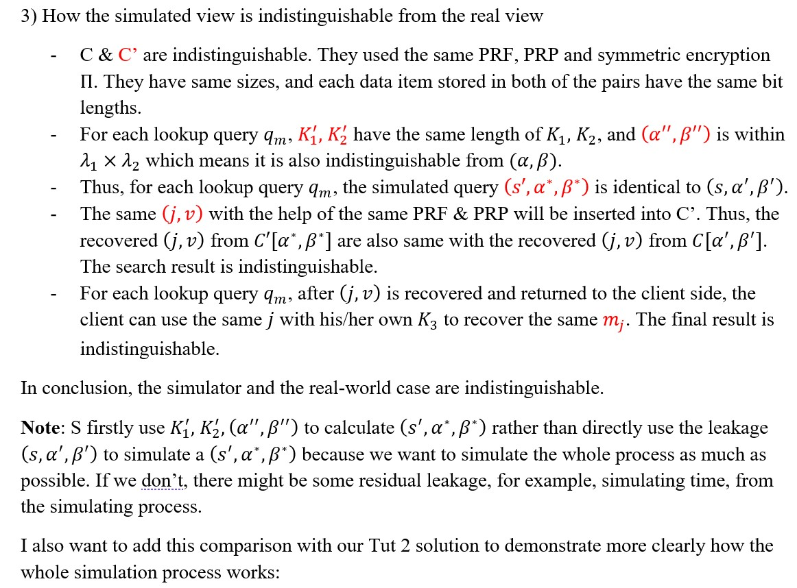
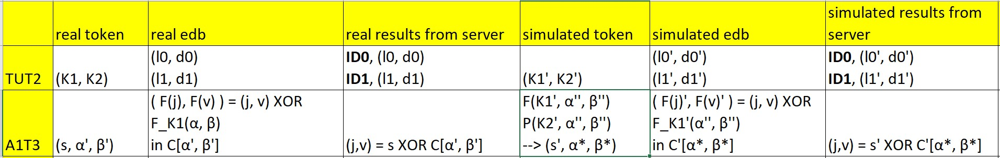
Task 2: Count Attacks against Searchable Symmetric Encryption
Case study I
d1 = {w1, w2, w3, w4, w6} d2 = {w1, w2, w3, w6}
d3 = {w1, w2, w4, w6} d4 = {w1, w4, w6}
d5 = {w4, w5, w6} d6 = {w4, w6}
We can convert this into a table:
| d1 | d2 | d3 | d4 | d5 | d6 | |
|---|---|---|---|---|---|---|
| w1 | 1 | 1 | 1 | 1 | ||
| w2 | 1 | 1 | 1 | |||
| w3 | 1 | 1 | ||||
| w4 | 1 | 1 | 1 | 1 | 1 | |
| w5 | 1 | |||||
| w6 | 1 | 1 | 1 | 1 | 1 | 1 |
We then generate the keyword co-occurrence matrix (presented as the table below):
| w1 | w2 | w3 | w4 | w5 | w6 | |
|---|---|---|---|---|---|---|
| w1 | 4 | |||||
| w2 | 3 | |||||
| w3 | 2 | |||||
| w4 | 5 | |||||
| w5 | 1 | |||||
| w6 | 6 |
In general, we have to fill the rest of the table. But in this case, since the numbers in diagonal are all unique, we can simply deduct the match between keywords and queries without the grey numbers. (I put them here for better understanding how key-word co-occurrence works.)
q1 matches 5 permuted document IDs, and w4 matches 5 document IDs too. Thus, q1 = w4.
q2 matches 2 permuted document IDs, and w3 matches 2 document IDs too. Thus, q2 = w3.
q3 matches 4 permuted document IDs, and w1 matches 4 document IDs too. Thus, q3 = w1.
q4 matches 3 permuted document IDs, and w2 matches 3 document IDs too. Thus, q4 = w2.
q5 matches 6 permuted document IDs, and w6 matches 6 document IDs too. Thus, q5 = w6.
q6 matches 1 permuted document IDs, and w5 matches 1 document IDs too. Thus, q6 = w5.
Case study II
d1 = {w1, w2, w3, w4, w6} d2 = {w2, w3, w6}
d3 = {w1, w3, w4, w6} d4 = {w1, w4, w6}
d5 = {w4, w5, w6} d6 = {w5}
| d1 | d2 | d3 | d4 | d5 | d6 | |
|---|---|---|---|---|---|---|
| w1 | 1 | 1 | 1 | |||
| w2 | 1 | 1 | ||||
| w3 | 1 | 1 | 1 | |||
| w4 | 1 | 1 | 1 | 1 | ||
| w5 | 1 | 1 | ||||
| w6 | 1 | 1 | 1 | 1 | 1 |
| w1 | w2 | w3 | w4 | w5 | w6 | |
|---|---|---|---|---|---|---|
| w1 | 3 | 1 | 2 | 3 | 0 | 3 |
| w2 | 1 | 2 | 2 | 1 | 0 | 2 |
| w3 | 2 | 2 | 3 | 2 | 0 | 3 |
| w4 | 3 | 1 | 2 | 4 | 1 | 4 |
| w5 | 0 | 0 | 0 | 1 | 2 | 1 |
| w6 | 3 | 2 | 3 | 4 | 1 | 5 |
| q | eids | Total number | |||||
|---|---|---|---|---|---|---|---|
| q1 | e2 | e3 | e4 | e5 | e6 | 5 | |
| q2 | e2 | e3 | e5 | e6 | 4 | ||
| q3 | e1 | e3 | 2 | ||||
| q4 | e4 | e5 | 2 | ||||
| q5 | e2 | e5 | e6 | 3 | |||
| q6 | e4 | e5 | e6 | 3 |
Analysis:
- Unique pair:
q1 = w6, for unique occurrence 5.
q2 = w4, for unique occurrence 4.
- Possible pairs:
{q3, q4} × {w2, w5} for occurrence 2.
{q5, q6} × {w1, w3} for occurrence 3.
- We will need query co-occurrence matrix.
| q1 | q2 | q3 | q4 | q5 | q6 | |
|---|---|---|---|---|---|---|
| q1 | 5 | 4 | 1 | 2 | 3 | 3 |
| q2 | 4 | 4 | 1 | 1 | 3 | 2 |
| q3 | 1 | 1 | 2 | 0 | 0 | 0 |
| q4 | 2 | 1 | 0 | 2 | 1 | 2 |
| q5 | 3 | 3 | 0 | 1 | 3 | 2 |
| q6 | 3 | 4 | 0 | 2 | 2 | 3 |
Usually, we will observe the unique correlation of q3-q6 with q1 & q2, but here we have a special pattern: correlation 0 only occurs in q3 & w5. Thus, we immediately know that q3 = w5, which leads to the other pair q4 = w2.
Check:
Correlation(w2, w4) = 1 = Correlation(q4, q2)
Correlation(w2, w6) = 2 = Correlation(q4, q1)
Thus, this is correct.
Finally, we will look at {q5, q6} × {w1, w3}.
By observing, we should use q6 as our break point.
Correlation (q6, q2) = 2 = Correlation (w3, w4), and this is a unique correlation. Thus, q6 = w3, which also leads to q5 = w1.
Check:
Correlation (q5, q1) = 3 = Correlation (w1, w6)
Correlation (q5, q2) = 3 = Correlation (w1, w4)
Thus, this is correct.
- The counterattack does recover all queries, and the final results are below:
q1 = w6 q2 = w4 q3 = w5
q4 = w2 q5 = w1 q6 = w3
Case study III
d1 = {w1, w2, w3, w6} d2 = {w2, w3, w4, w6} # update!
d3 = {w1, w2, w3, w4, w6} d4 = {w1, w3, w4, w6}
d5 = {w5, w6} d6 = {w5, w6}
| d1 | d2 | d3 | d4 | d5 | d6 | |
|---|---|---|---|---|---|---|
| w1 | 1 | 1 | 1 | |||
| w2 | 1 | 1 | 1 | |||
| w3 | 1 | 1 | 1 | 1 | ||
| w4 | 1 | 1 | 1 | |||
| w5 | 1 | 1 | ||||
| w6 | 1 | 1 | 1 | 1 | 1 | 1 |
| w1 | w2 | w3 | w4 | w5 | w6 | |
|---|---|---|---|---|---|---|
| w1 | 3 | 2 | 3 | 2 | 0 | 3 |
| w2 | 2 | 3 | 3 | 1 | 0 | 3 |
| w3 | 3 | 3 | 4 | 2 | 0 | 4 |
| w4 | 2 | 1 | 2 | 3 | 0 | 2 |
| w5 | 0 | 0 | 0 | 0 | 2 | 2 |
| w6 | 3 | 3 | 4 | 2 | 2 | 6 |
| q | eids | Total number | |||||
|---|---|---|---|---|---|---|---|
| q1 | e1 | e5 | e6 | 3 | |||
| q2 | e1 | e2 | e6 | 3 | |||
| q3 | e3 | e4 | 2 | ||||
| q4 | e1 | e2 | e3 | e4 | e5 | e6 | 6 |
| q5 | e2 | e5 | e6 | 3 | |||
| q6 | e1 | e2 | e5 | e6 | 4 |
| q1 | q2 | q3 | q4 | q5 | q6 | |
|---|---|---|---|---|---|---|
| q1 | 3 | 2 | 0 | 3 | 2 | 3 |
| q2 | 2 | 3 | 0 | 3 | 2 | 3 |
| q3 | 0 | 0 | 2 | 2 | 0 | 0 |
| q4 | 3 | 3 | 2 | 6 | 3 | 4 |
| q5 | 2 | 2 | 0 | 3 | 3 | 3 |
| q6 | 3 | 3 | 0 | 4 | 3 | 4 |
Analysis:
We notice that the occurrence in query does not totally match occurrence in keyword. This is an obvious evidence that the encryption has some padding.(Since the assignment has been updated, this is not the situation.)
So, I’d like to start from Correlation 0, since the padding can only add files rather than removing files. Thus, we can see the only one who has Correlation = 0 more than once is q3 & w5.
q3 = w5
- Unique pair
But we are lucky. Since the unique occurrence 4 and 6 in keyword matrix are larger than other occurrences, and in query matrix they are also unique and larger than others, we can conclude that they are matched.
Thus, q4 = w6, and q6 = w3.
- Possible pair
{q1, q2, q5} × {w1, w2, w4}
We will analyze the Correlation between them and the revealed pairs.
For w3:
Correlation (w3, w1) = 3 Correlation (q6, q1) = 3
Correlation (w3, w2) = 3 & Correlation (q6, q2) = 3
Correlation (w3, w4) = 2 3 Correlation (q6, q5) = 3
This tells nothing.
For w5:
Correlation (w5, w1) = 0 Correlation (q3, q1) = 0
Correlation (w5, w2) = 0 & Correlation (q3, q2) = 0
Correlation (w5, w4) = 0 Correlation (q3, q5) = 0
This gives no information.
For w6, situations are similar.
It seems that we have no way to go. But hang on, can we break this by matching eid & id?
q3 = w5: {e3, e4} × {d5, d6}, thus {e1, e2, e5, e6} × {d1, d2, d3, d4}
We can observe this:
| q1 | e1 | e5 | e6 |
|---|---|---|---|
| q2 | e1 | e2 | e6 |
| q5 | e2 | e5 | e6 |
| d1 | d2 | d3 | d4 | |
|---|---|---|---|---|
| w1 | 1 | 1 | 1 | |
| w2 | 1 | 1 | 1 | |
| w4 | 1 | 1 | 1 |
Thus, e6 = d3. And you can finally conclude that no more information can be retrieved further. Sorry, adversary!
- Information that leaks:
q3 = w5 q4 = w6 q6 = w3
e6 = d3
possible pairs: {q1, q2, q5} × {w1, w2, w4}
possible eid & id matches: {e3, e4} × {d5, d6}, {e1, e2, e5} × {d1, d2, d4}
Task 3: Padding Countermeasures in Searchable Symmetric Encryption
I wrote 3 .py files to not only calculate the result, but also finish the padding and output as .txt files. I will only put the main part of my code here, so you won’t see something like writer.write repeatedly.
Approach #1
Source code:
1 | longest = 0 |
The padding solution is to pad the id list of each keyword whose length(i.e., frequency; i.e., number of file id) is not the longest length to the longest length.
Results:
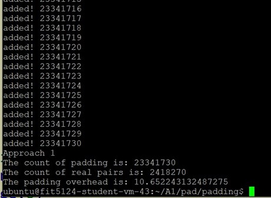
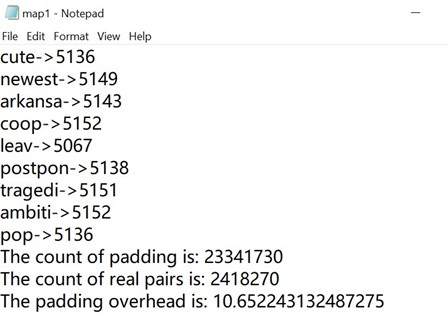
The overhead is ~10.65.
Approach #2
Source code:
1 | # select multiplication |
The padding solution is to pad the id list of each keyword whose length is not a multiplication of 100 to the nearest multiplication of 100 larger than the original length.
Results:
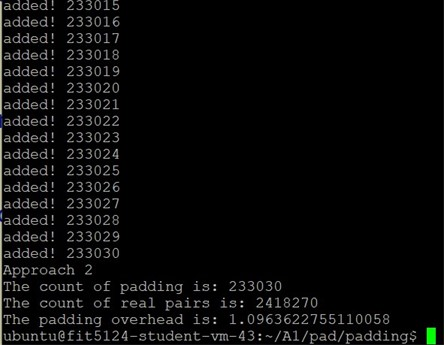
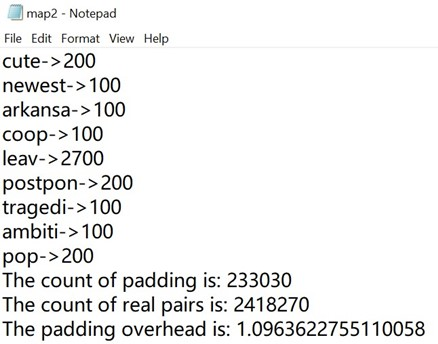
The overhead is ~1.10.
Approach #3
Source code
1 | file = open(frequency_file, "r", newline='') |
This padding solution is to use a cluster to put the keywords having similar frequencies into one small group and inside the group, pad all keywords to the largest frequency.
Results:
App #3 – 256
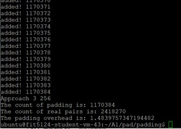
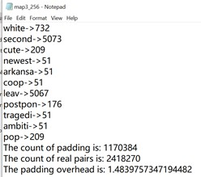
App #3 – 512
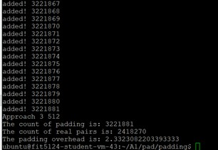
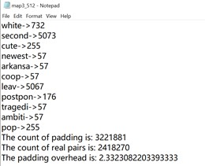
The overhead for cluster 256 is ~1.48, for cluster 512 is ~ 2.33.
Comparison
| Approach #1 | Approach #2 | Approach #3 – 256 | Approach #3 – 512 | |
|---|---|---|---|---|
| Padding overhead | ~10.65224 | ~1.09636 | ~1.48398 | ~2.33231 |
The biggest overhead is approach #1, which is also called native padding.
App #2 has the smallest padding overhead, but we can see from the Fig 5.2.2: it’s very easy to guess that the padding pattern is multiplication of 100. Although we are not required to calculate the recovery ratio, we can observe the security strength of App #2 should be weaker than App #3.
Thus, under the same comparable security strength, the minimal padding will be App #3. We can also see that cluster 256 is smaller than cluster 512. This is because the smaller the cluster group is, the less padding will the approach need.
Task 4: Inference Attacks against Order-preserving Encryption
Source code:
1 | import random |
Results:
enc_age,raw_age
0->0
1->1
11->2
18->3
22->4
39->5
46->6
52->7
56->8
62->9
63->10
69->11
73->12
77->13
79->14
93->15
95->16
100->17
102->18
104->19
107->20
117->21
120->22
141->23
149->24
150->25
153->26
159->27
162->28
163->29
168->30
172->31
186->32
191->33
193->34
206->35
207->36
208->37
209->38
211->39
212->40
217->41
226->42
230->43
232->44
238->45
255->46
259->47
263->48
264->49
270->50
271->51
275->52
276->53
277->54
278->55
284->56
286->57
293->58
295->59
297->60
300->61
310->62
313->63
315->64
317->65
327->66
332->67
337->68
339->69
345->70
353->71
356->72
357->73
359->74
365->75
369->76
378->77
383->78
387->79
394->80
402->81
407->82
409->83
410->84
414->85
424->86
428->87
430->88
431->89
432->90
434->91
438->92
447->93
459->94
466->95
468->96
To check this result, I sorted the 2 .csv files in ascending order in Excel and observe the matches. It’s evident that this result is correct.